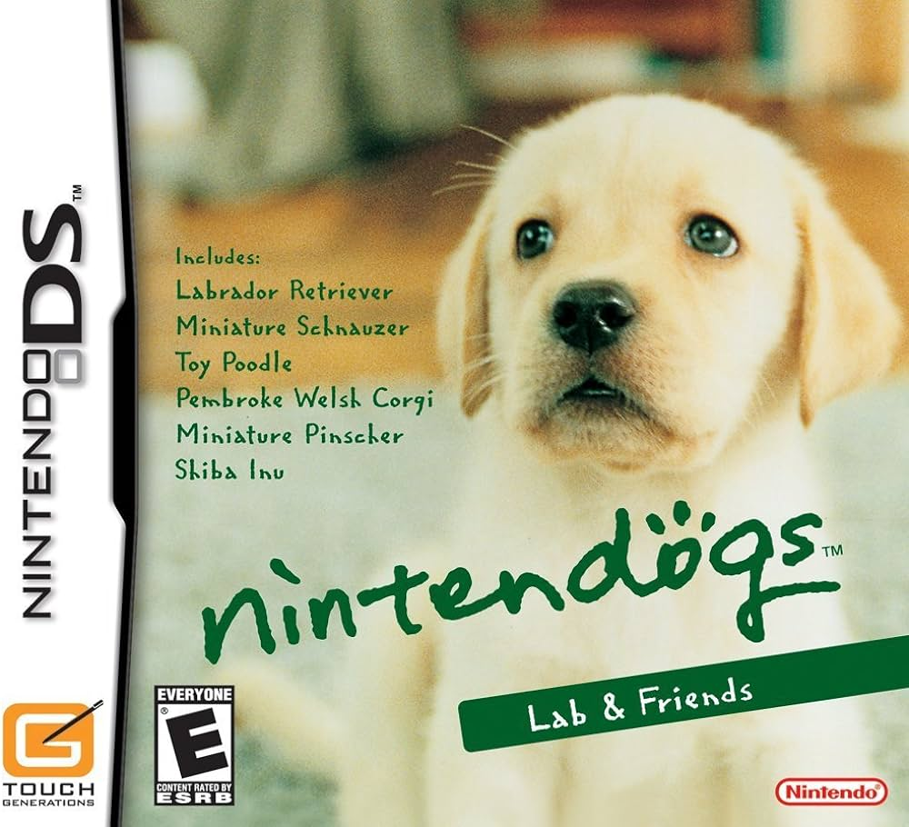
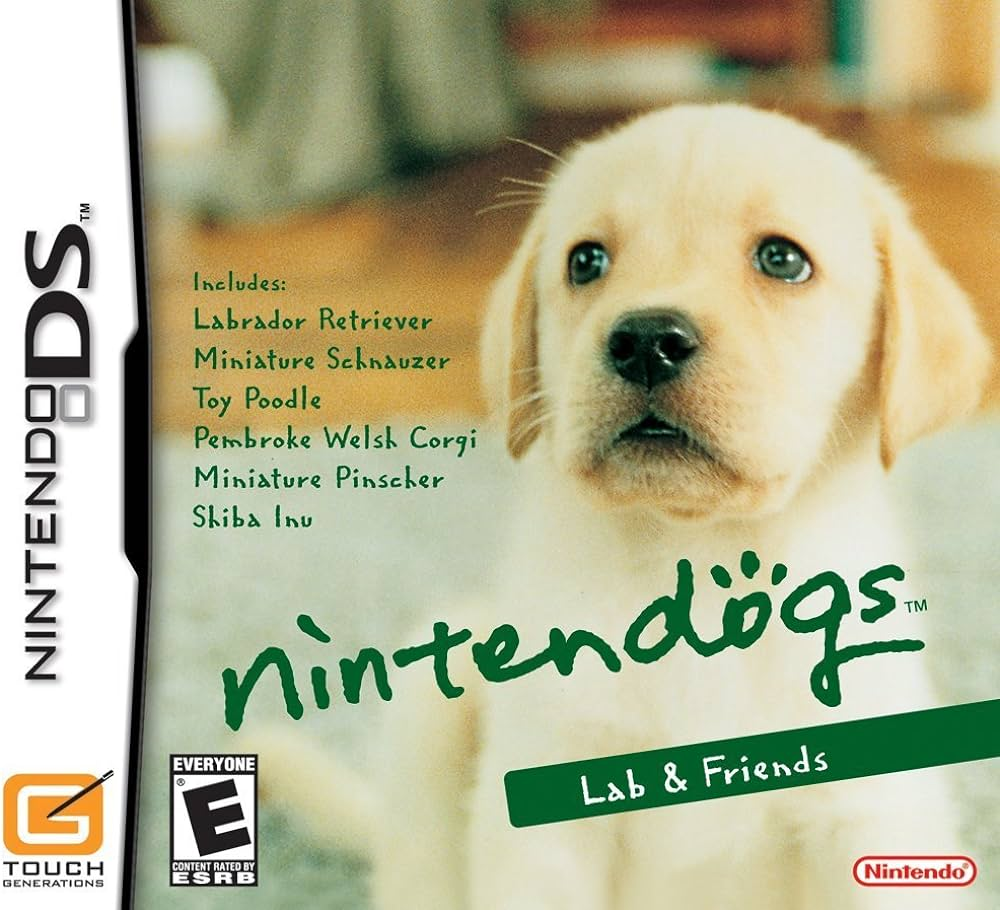

With the DSi, "Play with pictures, Record and play with sounds,Download Nintendo DSiWare* (which no longer exists),Enjoy pre-installed Flipnote Studio"
The Nintendo DSi is a dual-screen handheld game console released by Nintendo. The console launched in Japan on November 1, 2008, and worldwide beginning in April 2009. It is the third iteration of the Nintendo DS, and its primary market rival was Sony's PlayStation Portable (PSP). The fourth iteration, entitled Nintendo DSi XL,[cn 2] is a larger model that launched in Japan on November 21, 2009, and worldwide beginning in March 2010.


 
